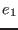

Next: The Foreign Function Interface
Up: The Structure of Web
Previous: The Structure of Web
Contents
In many web applications, it's useful to run code at points other than requests from browsers. Ur/Web's task mechanism facilitates this. A type family of task kinds is in the standard library:
A task kind names a particular extension point of generated applications, where the type parameter of a task kind describes which extra input data is available at that extension point. Add task code with the special declaration form
, where 
is a task kind with data  , and
is a function from
to
.
, and
is a function from
to
.
The currently supported task kinds are:
-
 : Code that is run when the application starts up.
: Code that is run when the application starts up.
-
 : Code that is run for each client that the runtime system decides has surfed away. When a request that generates a new client handle is aborted, that handle will still eventually be passed to
task code, even though the corresponding browser was never informed of the client handle's existence. In other words, in general,
handlers will be called more times than there are actual clients.
: Code that is run for each client that the runtime system decides has surfed away. When a request that generates a new client handle is aborted, that handle will still eventually be passed to
task code, even though the corresponding browser was never informed of the client handle's existence. In other words, in general,
handlers will be called more times than there are actual clients.
-
: Code that is run when the application starts up and then every
 seconds thereafter.
seconds thereafter.
Next: The Foreign Function Interface
Up: The Structure of Web
Previous: The Structure of Web
Contents
2014-07-14